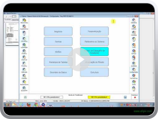Modelos de impressão para OS preventivas
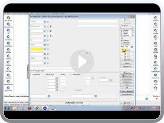Modelos de impressão para OS corretiva por Davi Utzig.FLV
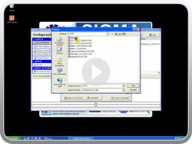ConfigNegócio - Configuração de Base de dados Sigma
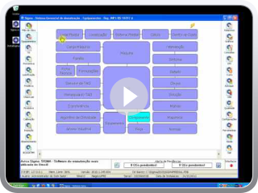Parametrização dos negócios no Sigma
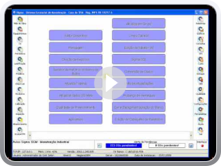Backup de instalação SIGMA
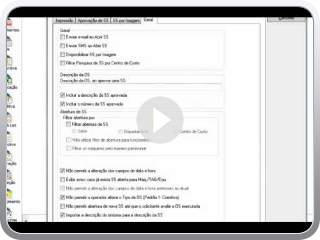Parâmetros e Configurações SS Parte 1
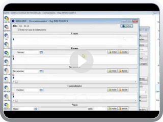Parâmetros e Configurações SS Parte 2
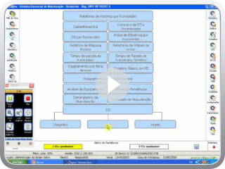Gravando o Logotipo no Banco de dados
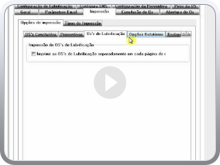Parâmetros do Sistema I
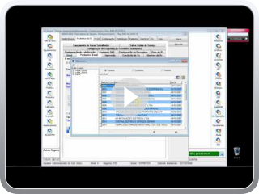Parâmetros do Sistema II
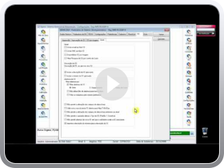Parâmetros do Sistema III
Adding Video to Blog by VideoLightBox.com v2.1